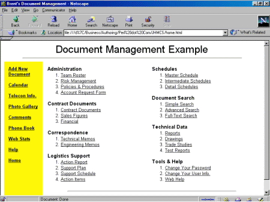

This article is about how a major corporation used Perl in a critical business application. The company I am writing about today is a major aerospace corporation who has chosen to remain anonymous. The names have been changed to protect the innocent - but the story and all events portrayed in here are all factual. For no compelling reason, I will call them "company B."
Company B received a contract to develop a new piece of hardware. As part of this contract, they were to supply their documents online.
First, company B looked into a Commercial, Off-The-Shelf (COTS) document management system. It seemed to meet all of their needs, until they found out that the cost was over $600,000. The price was way too high, in fact it was higher than the original budget for the whole contract!
Next, they decided to go with a proprietary document management system (DMS) that the company had an enterprise license for. This DMS was supposed to be the "do-all, end-all" DMS that would solve all of their problems. And since it was a commercial product and they had an enterprise license for it, the managers of the project assumed that there must be plenty of support available for it.
Company B spent over 6 months installing, configuring, and tweaking this DMS system on the new hardware that they had to buy in order to run it. When they ran into trouble, they called the people within company B who were supposed to be experts on the system for help. These experts didn't know the system any better than the group working on the project and support from the software company was either too pricey, or not much help. So much for the availability of support for this COTS product!
After 6 months of frustration, they gave up on the company standard DMS and implemented a "solution" using File Manager. This solution provided no features of a DMS, was cumbersome and documents were hard to find.
At this point I came along - and I was completely confident that I could solve their dilemma using a web-based solution with Perl. What other language would I use?
I talked with the program managers and we discussed what the needs of the DMS were. Next, I gathered user input, which, in my opinion, is the most important factor. When developing a system that is going to impact the way your users work on a system, it is important to understand their needs. After considering the needs of users and management, I proposed a Web-based DMS which management quickly approved. Now all I had to figure out was: how am I going to pull this off?
I started to develop the new system and the pieces seemed to fall into place. Eight weeks later, when we rolled out the new Perl DMS system, I completely shut off the existing File Manager access so users had no choice but to use the new system. It was a rather brutal way to force them onto the new system, but one that I felt was necessary.
The new Perl DMS system has the following features (and more):
Figure 1 shows an example of the main screen that is the heart of the Perl DMS.

This screen shot shows that the DMS system is divided up into categories and subcategories. When a user clicks on a subcategory, they are taken to a screen that lists all of the documents that they have rights to. All of this is done dynamically by gathering the data from the NT system and the back-end database.
Figure 2 shows an example of what the user sees when they click a subcategory.
The user only sees the documents that they have rights to see. The rights are gathered from the NT system rights and are based upon what groups the user is a member of. If you grant a user new rights, they simply have to reload the page and the new documents they have rights to are instantly available.
In Figure 2, a document is checked out to Fred Flintstone. Notice that this document does not have a Check Out link next to it (since it is already checked out). But, the username of the person who checked it out is linked to a database entry that stores the users name, phone number and e-mail address. If you need to check this document out, you can call the user who currently has it out and request that they check it in so that you can then check it out. If Fred Flintstone was the person viewing this page, there would be a Check In link next to the document(s) that he had checked out.
The Perl DMS also sends a weekly reminder email to all users who have documents checked out so they don't forget to check the documents back in.
The Perl DMS system has many benefits:
The total cost of the new Perl DMS:
Once again, Perl gets the job done where other solutions fail. Perl is extremely cost-effective and is very well supported. Whenever I ran into problems, I hit the online resources and Usenet. I was able to solve all of the problems that I encountered this way. I hate hearing people say that COTS programs are supported and Perl is not, it is a total misconception. Just because a corporation has an enterprise license or something is the company standard does not make it the right choice, keep an open mind.
Perl is a viable solution in many situations. Perl won't solve every problem -- I am still trying to get Perl to unclog my drains -- but it is a powerful language that adapts very well to many situations. Also with Perl, you are able to use it on nearly any platform, and on all major platforms -- making it an even more viable solution inside of enterprises.
Perl is just as important, actually it is probably more important, than those new enterprise languages with coffee names. While Perl may not be as buzzword compliant as those other languages, Perl is much more platform independent AND more widely used than management realizes.
The next time you have a major task to undertake, take a serious look at Perl, it could save you a lot of time, money and frustration!